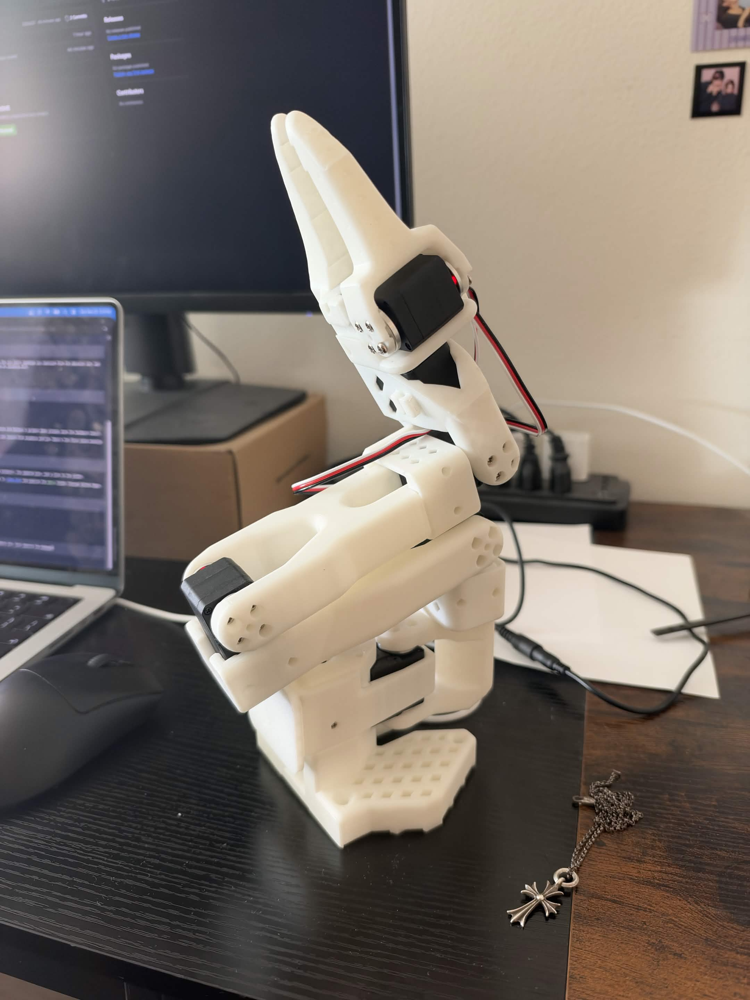
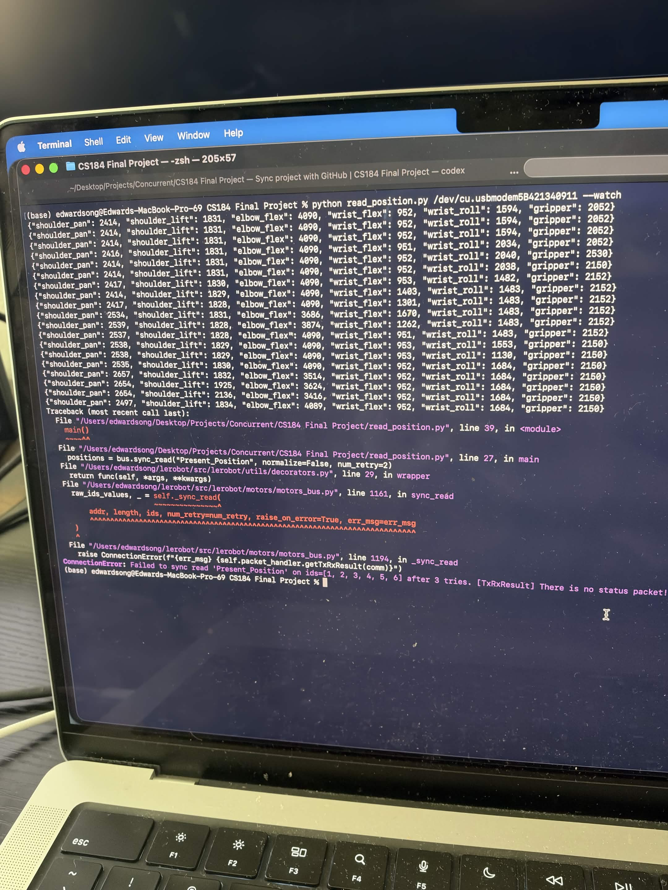

CS184 · Fall 2026 · Milestone reportRobotic Arm Simulator
Rachael Chen, Edward Song, Kevin Yamashita, and Jacob Shahatit
We are building a digital twin of the SO-101. Moving the physical arm by hand will drive a 3D model on screen. Our first hardware result is a complete six-motor snapshot.
From assembly to the first read
Our SO-101 kit arrived later than planned, so we used the milestone period to assemble the leader arm and bring up its USB connection. We wrote a Python reader that asks all six motors for their positions in one bus read and prints a labeled JSON snapshot.

Our assembled SO-101 leader arm.

A separate watch-mode run printed successive poses before a read timed out.
Six readings from one pose
Each motor has an encoder that measures the rotation of its shaft. The single-turn scale runs from 0 to 4,095 ticks and wraps back to 0 after one revolution. Each number below is one motor’s reading at the instant we sampled the arm. The gripper value measures its motor’s rotation. Converting it to a jaw opening requires a separate mapping.
Single pose · raw encoder ticks
| Joint | Reading | Min 0Max 4,095 |
|---|
| Shoulder pan | 2,259 | |
|---|
| Shoulder lift | 1,828 | |
|---|
| Elbow flex | 4,089 | |
|---|
| Wrist flex | 952 | |
|---|
| Wrist roll | 2,026 | |
|---|
| Gripper | 2,042 | |
|---|
Progress against our plan
We had aimed for a live mirror by November 21. With the arm assembled and all six motors responding, we can now test the mapping one joint at a time. The lowest reading in this pose was wrist flex at 952 ticks and the highest was elbow flex at 4,089. Finding each joint’s physical travel limits requires measurements across multiple poses.
Updated work plan
Record two marked poses for each joint to check its direction and zero offset. Then feed a saved pose into the URDF/STL loader and forward kinematics code and compare the rendered arm with a photo. Once those poses agree, stream timestamped readings into the renderer and measure sampling rate, frame time, and input-to-display delay. Physics remains a stretch goal.